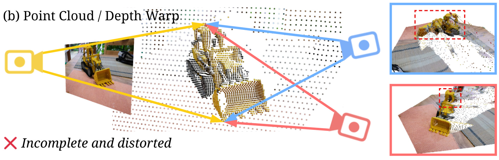
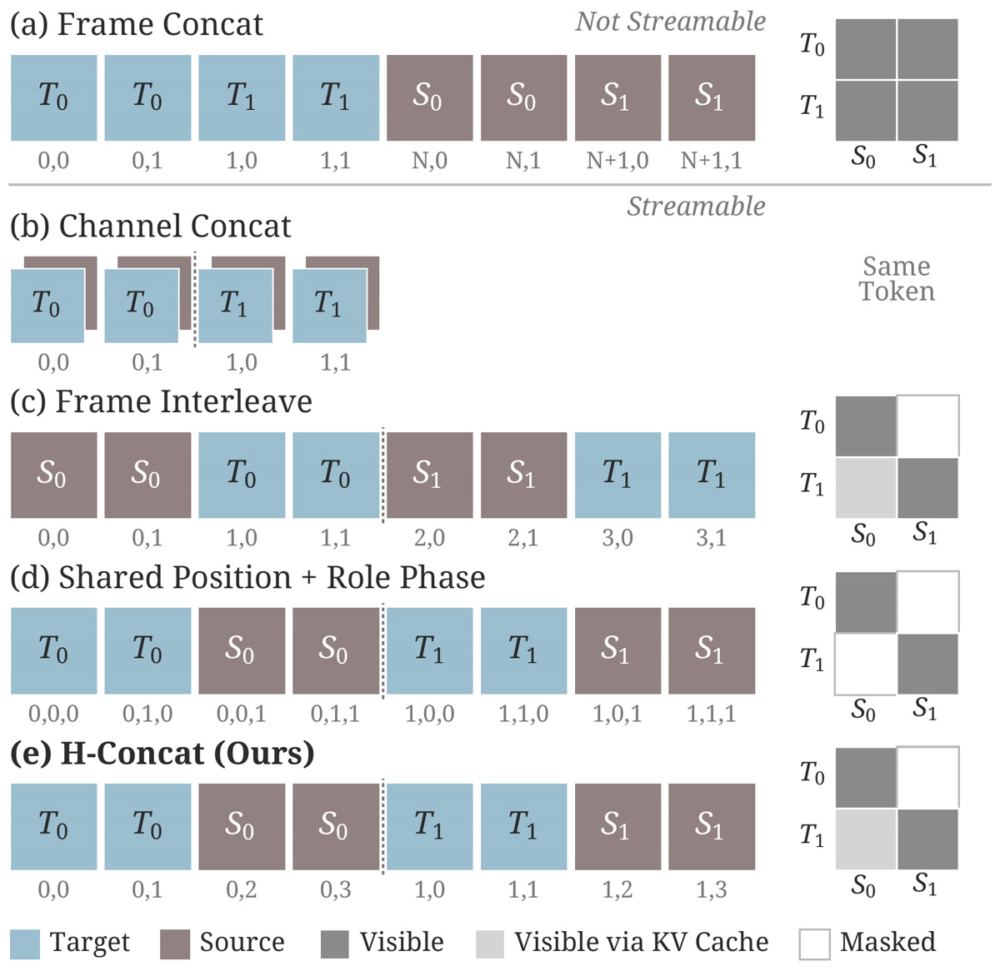

Camera-controlled video generation re-renders a video along a target camera trajectory, yet moving the camera around an object, the most natural way to change the viewpoint of an object-centric scene, remains difficult. Existing methods condition either on camera parameters, which are scale-ambiguous in monocular video, or on explicit geometry such as warped point clouds or depth, which breaks down under large viewpoint changes. We present AnyCam, a method that represents the camera with an anchor object in the scene: we reconstruct it in 3D and render it along the target trajectory, a camera signal that is scale-aware, view-complete and easy to specify relative to the object. A video diffusion model transfers the content and dynamics of the source video to the new viewpoint. Its H-Concat layout aligns source and target frames in time, so the model can be distilled into AnyCam-AR, a streaming few-step generator for on-the-fly camera control. Both models are trained on paired videos with pixel-aligned anchor renderings from multi-camera videos and static-scene captures. Experiments on diverse datasets and trajectories show that AnyCam performs favorably against camera-controlled video generation and 3D reconstruction methods in camera control and visual quality.
Hover over (or tap) a figure to play its animation.

Camera parameters are scale-ambiguous. A small object near the input camera and a large object farther away give the same input image, but the same target camera sees them at a different size, position and angle, so the target view is not determined.

Explicit geometry is incomplete and distorted. A point cloud or depth warp of the input image only covers the surface seen from the input camera. Under a large viewpoint change, the object breaks apart and the rendering misleads the video generation.

Our anchor rendering is scale-aware and view-complete. We reconstruct the anchor with SAM 3D, so target cameras at any angle see the whole anchor with the correct size and pose.

The user selects an anchor object in the source video. SAM 2 tracks it to give the source camera representation (the anchor cut-out), and SAM 3D reconstructs it; the reconstruction is aligned to the source cameras and rendered along the target trajectory to give the target camera representation. The noisy target latent and the source latent are concatenated along the height (H-Concat), each half receives its camera representation through channel concatenation, and the diffusion transformer denoises the target half, which the VAE decodes into the target video.

H-Concat stacks source and target frames along the height at the same temporal index, so the generation can stream, without new parameters or attention masks.
Any object in the scene can be the anchor. Different anchors in the same video give different handles on the camera.
We switch to another anchor and keep controlling the camera.
Select an object, reconstruct it with SAM 3D, then drag or scroll to move the camera; AnyCam-AR streams the output (recorded on 4 GPUs at 11.2 FPS).
@article{lyu2026anycam,
title = {AnyCam: Anything Can Represent Camera for Video Generation},
author = {Lyu, Weijie and Shu, Zhixin and Ke, Yuntian and Yang, Ming-Hsuan},
journal = {arXiv preprint arXiv:2611.34944},
year = {2026}
}